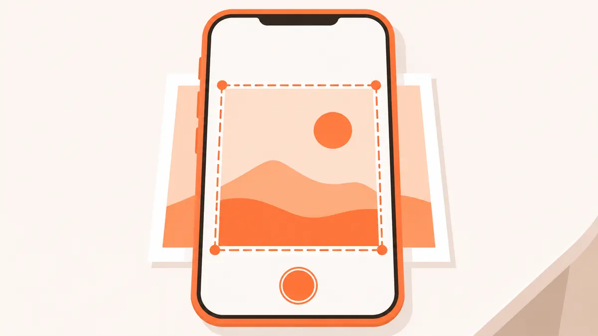

Ready to export — 0 pages
Export as PDF
Export as Images
Single page → JPG download
Multiple pages → ZIP archive
Processing…
Scan a photo or picture into a straight, cropped JPG or PDF. Free, no sign-up, processed in your browser.
Drop images or PDFs here. Crop, enhance and export in one workspace.
Private by design. Your documents are processed in this browser.
Single page → JPG download
Multiple pages → ZIP archive
Sign in to save scanned docs across devices.
No account?
A photo scanner online turns a picture of a printed photo, a page or a card into a straight, cropped image without a flatbed scanner. This photo scanner works in your browser: it finds the edges, flattens the angle and lets you adjust the picture before you save it as a JPG or PDF.
Use it to scan photo prints from an album, a picture of a certificate, an ID card or a whiteboard. Everything runs on your own device, with no app and no account.

The same engine powers both pages. The difference is the filter you choose:
| You are scanning | Best filter | Why |
|---|---|---|
| Printed photo or picture | Original or Enhance | Keeps skin tones and colours natural |
| Text page, form, notes | Magic Pro | White paper, dark text, shadows removed |
| Receipt or faint print | B&W or Lighten | Higher contrast, smaller file |
For text pages, the document scanner online page explains every filter in detail.
It does not repair scratches, tears or faded colour, and it does not upscale low-resolution pictures. The output is only as sharp as the photo you take, so use your phone's full camera resolution.
Yes. It is free with no sign-up, no page limit set by us and no watermark on the JPG or PDF you download.
Take a picture of the printed photo or upload a picture you already have, check the four corners, keep the Original or Enhance filter, then tap Download JPG.
Original keeps the colours as taken. Enhance adds a little contrast and brightness. Magic Pro and B&W are made for paper documents and will whiten a photo.
Yes. Add all the photos together. Each one gets its own crop, and you can download them as separate JPGs in a ZIP or as one PDF.
No. It crops, straightens and adjusts brightness, contrast, sharpness and saturation. It does not repair scratches, tears or faded colour.
No. The photo scanner runs in your browser tab, so your pictures are not sent to PDFdukan's servers.